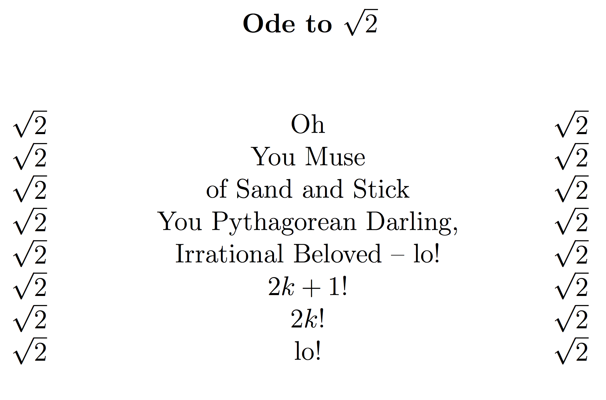

Elijah Soria
email: elijahsoria@gmail.com

|

-Elijah Soria |
About Me
Hello. I am Elijah Soria and I am currently a undergraduate student of mathematics and computer science at Saint Mary's college of California, with an expected graduation date of December 2016. I grew up in Minburn, Iowa, and graduated from West Des Moines Valley High School in 2013. I have a wide range of mathematical and computational interests, including mathematical poetry, and am excited to see where my interests take me.
Publications
Some Properties of Generalized k-Pell Sequences The purpose of this paper is twofold; (1) to develop several identities for the Generalized k-Pell sequence (including those of Binet, Catalan, Cassini, and d'Ocagne), and (2) to study applications of tridiagonal generating matrices for the k-Pell and Generalized k-Pell sequences.
The resulting paper was published in The Pi Mu Epsilon Journal, Vol. 14, No. 3, pp. 205-217, 2015. Here is the link to the paper on arXiv.org: http://arxiv.org/abs/1508.03035
Resume/CV
Here is a copy of my (CV-like) resume: Elijah's Resume